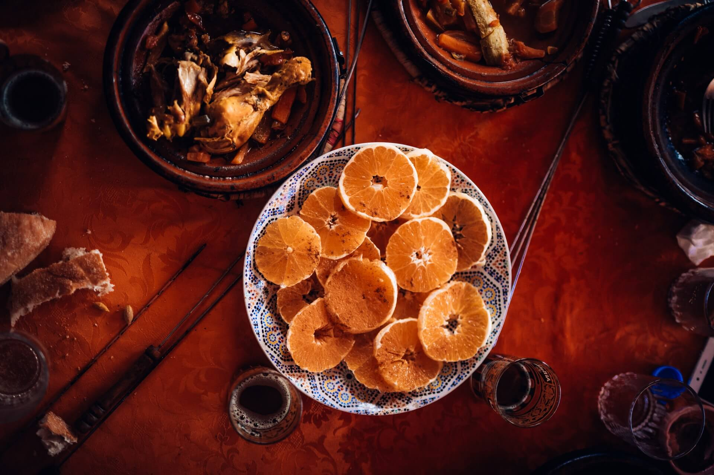

It's as easy as
1: Creating a new potluck
2: Adding suggested menu items
3: Inviting your guests
Get Started
As an event organizer, simply create an event and invite your friends. Add your desired menu items to the pot, and let each participant take their pick.

As a guest, just RSVP to any event you've recieved an invite to, and select the menu items you'd like to bring. It's as simple as that.
